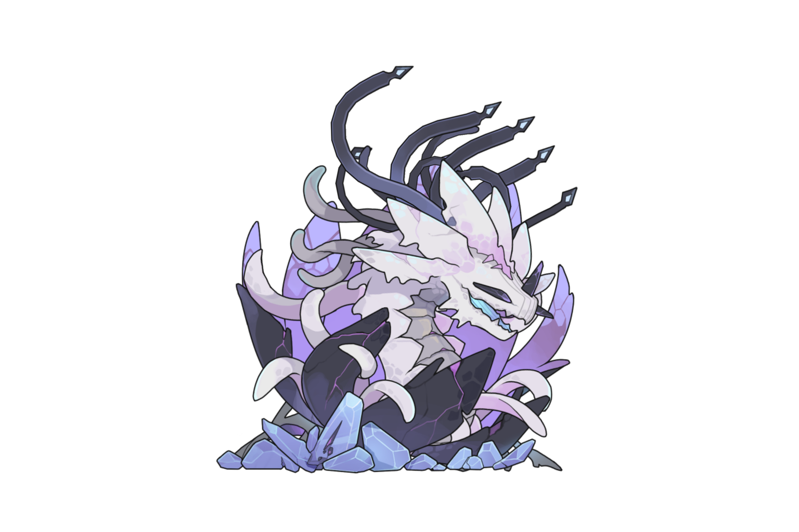
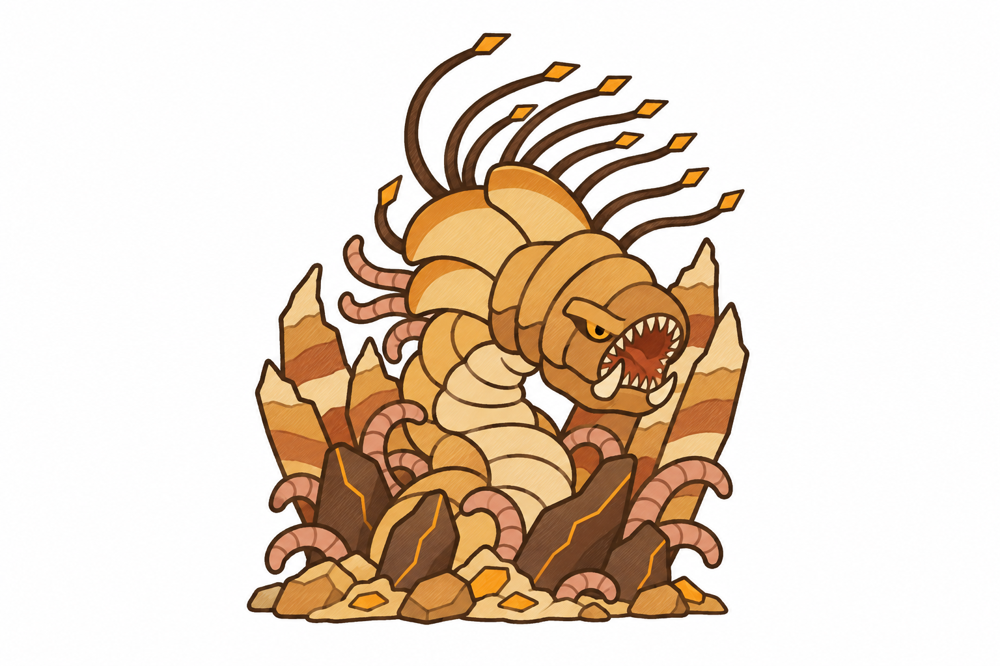
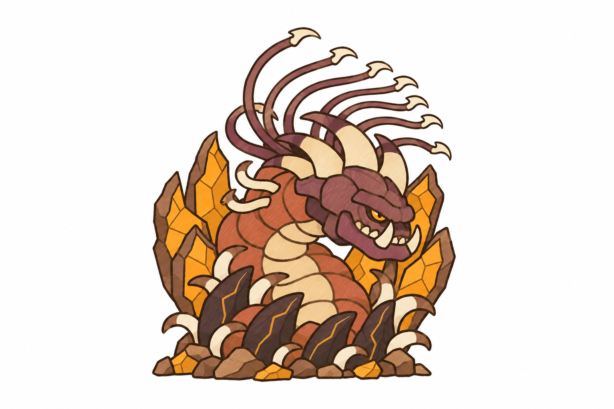
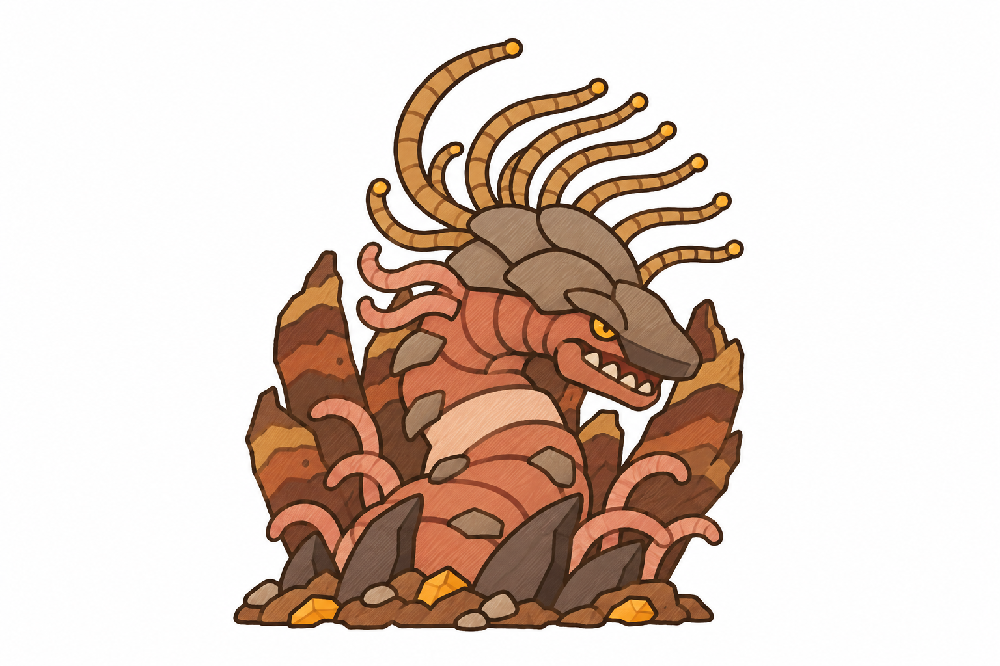

Con gốc của rig: monster_3643. Gen qua Magnific GPT 2.6, 1k high, 95 credit / ảnh.

Con gốc monster_3643 (khung 0 idle)

A. Sâu cát (nghiêng Dune): đầu húc ba vòng giáp sa thạch, miệng tròn nhiều vòng răng, thân vòng đốt vàng cát, mười râu roi đầu ngạnh hổ phách, phiến đá phân tầng, tua như giun con. IoU 0,675

B. Baron đất (nghiêng Baron): đầu mai nâu tím, vương miện sừng kem, hai ngà lớn hàm dưới, thân đỏ đất nung bụng kem, gai roi đầu móc, phiến hốc đá lòng pha lê hổ phách, tua gai xương. IoU 0,665

C. Giun đất giáp đá: thân thịt hồng có đai yên, mõm xẻng đá phiến, mào ba vảy ngói, râu đất son đốt tròn, phiến tảng đất vỡ. IoU 0,645